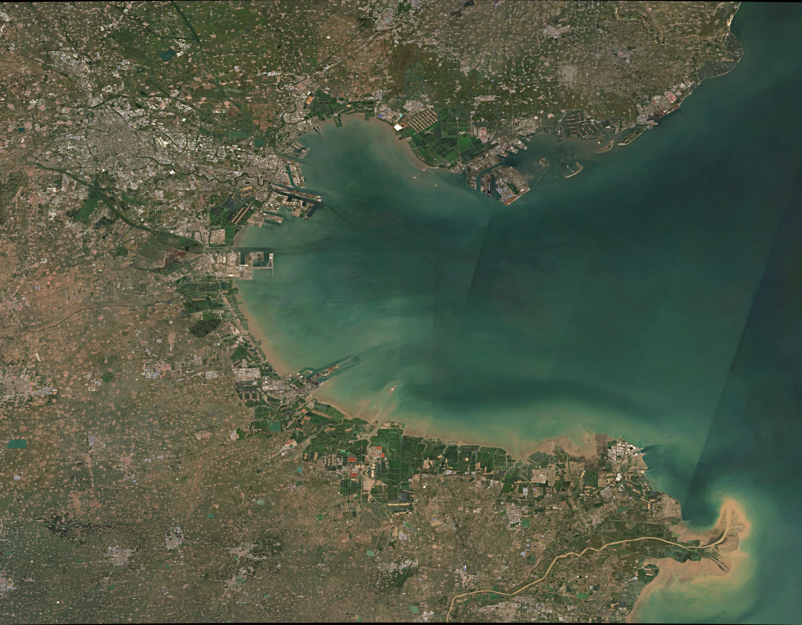
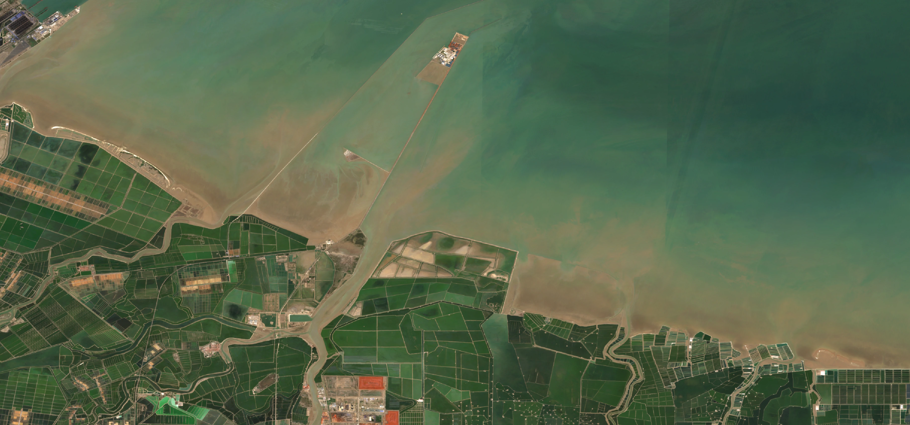
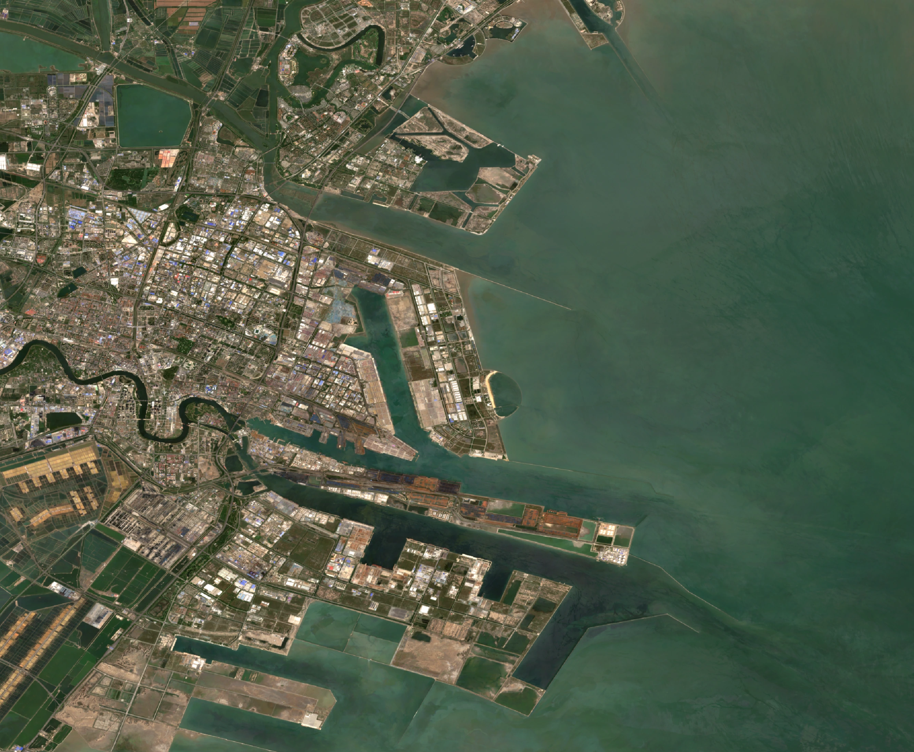
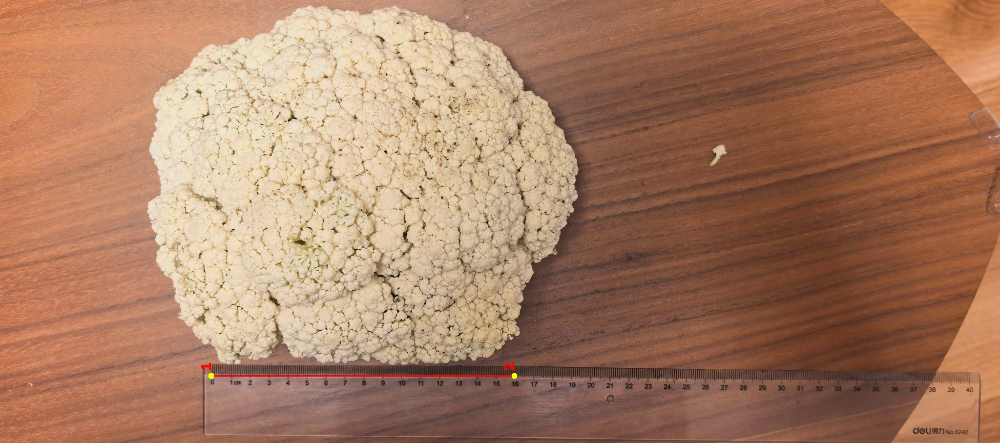
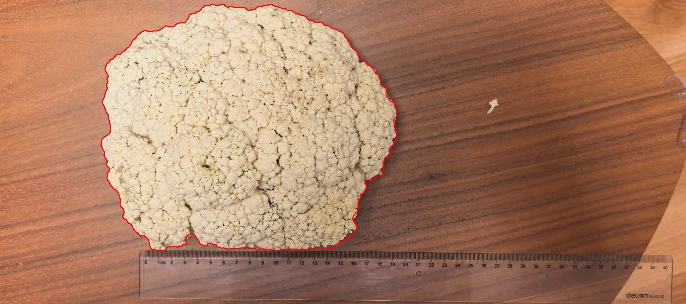

03D 我们怎么测？
圆规步测法
固定步长↓沿边界移动↓记录步数↓长度 = 步数 × 步长
02 / 09
同一条曲线，为什么换一把尺子，答案就变了？
测量规则整齐的物体，通常会得到一个稳定的数值。但海岸线有许多大小不同的弯曲。测量时使用的基本单位大小，就是这里所说的尺度。
当尺度改变，能够被捕捉到的边界细节也会改变。这种“测量结果随尺度变化”的现象，称为尺度效应。
跨过许多细小弯曲，路径更像一条折线。
捕捉更多边界细节，折线更贴近原曲线。
拖动“尺子大小”，看看同一条复杂边界的测量结果怎样变化。
这里的曲线和数值只用于帮助理解尺度效应，不代表本研究实际岸线和实际长度。
尺子变小后，测量开始捕捉更多边界细节。
当尺子变小时，测量折线能够捕捉更多细节，得到的模拟长度通常会增加。模拟单位仅用于比较不同尺子设置之间的变化。
03 / 09
从真实对象出发，再把一个地理问题变成可以测量、比较和检验的问题。
03A 研究区在哪里？
研究使用渤海湾相关的Sentinel-2真彩色合成影像，并从中提取自然岸线和人工岸线对象。

03B 具体研究了哪类岸线？


03C 为什么还量一颗花椰菜？
为了判断这种尺度效应是否只出现在海岸线，研究又选择了生活中容易获得的花椰菜，将其外轮廓数字化后进行相同的多尺度测量。


03D 我们怎么测？
用不同量测尺度对同一岸线进行数字化长度测量。在不同尺度下重复测量，以比较尺度变化对长度结果的影响。
这是花椰菜二维外轮廓的最终平均结果，单位为毫米。
随着量测尺度减小，花椰菜轮廓的测得长度也总体增加。
04 / 09
先看真实测量结果，再讨论它可能遵循的数学规律。
在本研究所选岸段和测量范围内，随着量测尺度减小，测得长度总体增加。
横轴按“大尺度 → 小尺度”排列，便于观察尺度减小时长度的总体变化。
在本研究所选岸段和尺度范围内，随着量测尺度减小，自然岸线和人工岸线的测得长度总体增加。
圆规步测与ArcGIS属于不同测量流程，尺度单位和测量方式不同，两套结果应分别理解。
圆规步长减小时，两类岸线的测得长度总体增加；这里的毫米步长不能直接换算成ArcGIS的米尺度进行横向比较。
05 / 09
把“尺子大小”和“测得长度”写成变量，寻找一个能够描述变化的函数。
设量测尺度为 x，测得长度为 y。
研究目标，是寻找一种能描述这种变化的函数关系。
用直线描述变化。
R² = 0.86用倒数关系描述变化。
R² = 0.75在本研究数据和尺度范围内，拟合程度更高。
R² = 0.99幂函数写作：
本研究双对数图使用自然对数，关系变成：
在双对数坐标中，数据若近似一条直线，就可以利用直线斜率 n 描述变化，再计算：
横轴为 ln(量测尺度 / m)，纵轴为 ln(岸线长度 / km)。图中拟合线直接使用最终报告关系式：Y = −0.1842X + 5.6267；正文中的D和R²仍以最终报告为准。
双对数坐标下的数据近似呈线性关系，是本研究采用幂函数近似描述尺度效应的重要依据之一。
06 / 09
同一个对象换一种测量方法，D值也可能不同。因此，方法必须和数值一起被看见。
在本研究语境中，D增加表示边界在不同尺度下表现出的长度变化更加明显；它不是绝对复杂度评分。
D值必须和对象、测量方法及尺度范围一起理解。
这些D值是特定对象、方法和尺度范围下的定量描述，不构成绝对复杂度排行榜。
07 / 09
模型看起来很贴合数据，但真正的检验要看它能不能预测“没见过的数据”。
R²很高，拟合看起来非常好。
但预测仍然可能出现明显误差。
先故意不给模型看一部分数据，再让它预测这些没见过的数据。这样才能检验模型的预测能力，而不只是看它对已知数据的贴合程度。
| 尺度 | 预测 km | 实测 km | 误差 |
|---|---|---|---|
| 75 m | 131.1854 | 123.198 | 6.48% |
| 50 m | 142.4985 | 126.683 | 12.48% |
用50—1000 m尺度数据建模，预测更大的尺度。
小尺度验证显示预测与实测之间存在差异；大尺度反向验证只展示报告明确给出的误差，不反推缺失预测值。
R²很高不等于预测一定准确，留出数据的预测误差仍需单独检查。
08 / 09
更小的尺度带来更多细节，也带来分辨率、判断和成本的限制。
增加 1.110 km
增加 0.555 km
补测用于观察更小尺度下的变化，不代表5 m就是所有海岸线的最佳尺度。
尺度继续减小后，长度仍然增加，但本研究补测中的增加幅度已经减小。
09 / 09
分形提供了一种认识自然界复杂、不规则结构的方法。
同一条边界，在不同尺度下可能呈现不同的长度。
分叉和汇流形成层层展开的结构。
外轮廓也可以作为复杂边界来观察尺度响应。
自然界中的不规则形状，很难用单一的规则几何描述。
血管、肺部支气管和图像纹理也常被作为延伸讨论对象，但它们不属于本研究实际验证过的全部对象，也不意味着具有完全相同的分形维数。